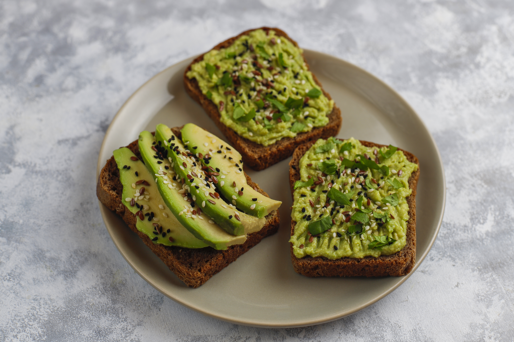

Home
Avocado toast recipe

This classic avocado toast is the ultimate quick breakfast or healthy snack. It combines the creamy richness of ripe avocados with the satisfying crunch of toasted artisanal bread, seasoned simply to let the fresh ingredients shine.
Ingredients
- 1 thick slice of sourdough or multigrain bread
- 1/2 ripe avocado
- 1 teaspoon extra virgin olive oil
- A pinch of sea salt and cracked black pepper
- Optional: Red pepper flakes or microgreens for garnish
Here is the step-by-step process for making a classic lasagna:
- Toast the Bread: Place your slice of bread in a toaster or under a broiler until it is golden brown and crisp
- the Avocado: In a small bowl, scoop out the avocado flesh and mash it with a fork until it reaches your desired consistency (chunky or smooth).
- Spread and Season: Spread the mashed avocado evenly over the warm toast.
- Add Finishers: Drizzle with olive oil and sprinkle with salt, pepper, and any optional toppings.